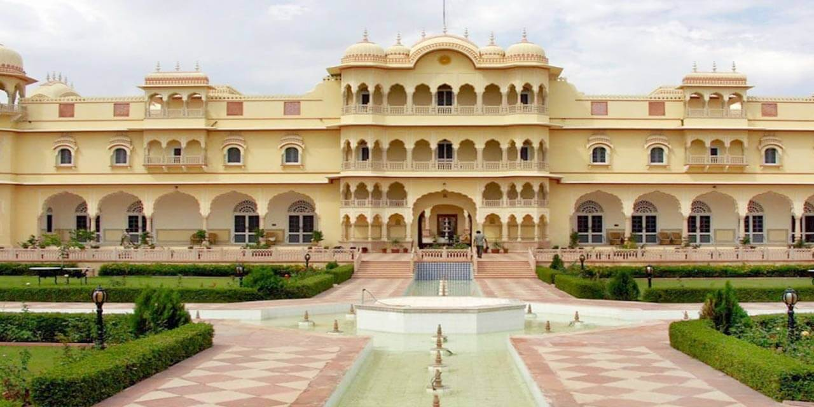

The Amber Fort: A Majestic Marvel
The Amber Fort is a stunning example of Rajput architecture, located on a hilltop overlooking the city of Jaipur.
Fun Fact:
~It was built in the 16th century and is a UNESCO World Heritage Site!
Things to Explore at The Amber Fort:
-
The Sheesh Mahal:
Marvel at the intricate mirror work in the palace.
-
The Diwan-e-Aam:
Visit the Hall of Public Audience with its stunning architecture.
-
The Gardens:
Stroll through the beautiful gardens surrounding the fort.
-
The Elephant Ride:
Experience an elephant ride up to the fort for a royal experience.
-
The Light and Sound Show:
Enjoy the evening show that narrates the history of the fort.
Why Visit The Amber Fort?
!Because it’s not just a fort, but a journey into Rajasthan’s royal past!
Hawa Mahal: The Palace of Winds
Hawa Mahal, with its unique honeycomb structure, is a symbol of Jaipur's architectural brilliance.
Fun Fact:
~It was built in 1799 for the royal ladies to observe street festivals without being seen!
Things to Explore at Hawa Mahal:
-
The Windows:
Admire the intricate latticework and the 953 small windows.
-
The Museum:
Visit the small museum inside that showcases artifacts from the royal era.
-
The Viewpoint:
Enjoy panoramic views of the Pink City from the top.
-
The Architecture:
Marvel at the blend of Hindu and Islamic architectural styles.
-
The Evening Lights:
See the palace illuminated in vibrant colors at night.
Why Visit Hawa Mahal?
!Because it’s not just a palace, but a masterpiece of art and history!
City Palace: A Royal Residence
The City Palace is a magnificent complex that showcases the grandeur of Jaipur's royal heritage.
Fun Fact:
~It is still the residence of the royal family of Jaipur!
Things to Explore at City Palace:
-
The Chandra Mahal:
Visit the main palace where the royal family resides.
-
The Museum:
Explore the museum housing royal artifacts and costumes.
-
The Courtyards:
Stroll through the beautiful courtyards adorned with fountains and gardens.
-
The Armory:
See the collection of weapons and armor used by the royals.
-
The Peacock Gate:
Admire the stunning Peacock Gate, one of the main entrances to the palace.
Why Visit City Palace?
!Because it’s not just a palace, but a glimpse into the life of Rajasthan’s royalty!

Jantar Mantar: The Astronomical Marvel
Jantar Mantar is an astronomical observatory that houses the world's largest stone sundial.
Fun Fact:
~It was built in the 18th century by Maharaja Sawai Jai Singh II!
Things to Explore at Jantar Mantar:
-
The Samrat Yantra:
See the world's largest sundial that tells time accurately.
-
The Jai Prakash Yantra:
Explore the hemispherical structures used for astronomical observations.
-
The Ram Yantra:
Visit the instruments used to measure altitude and azimuth of celestial bodies.
-
The Observatory:
Learn about the ancient astronomical techniques used by the royals.
-
The Architecture:
Admire the unique architectural style blending science and art.
Why Visit Jantar Mantar?
!Because it’s not just an observatory, but a testament to Rajasthan’s scientific heritage!
Albert Hall Museum: A Cultural Gem
Albert Hall Museum is the oldest museum in Rajasthan, showcasing a rich collection of artifacts.
Fun Fact:
~It was named after King Edward VII and is a fine example of Indo-Saracenic architecture!
Things to Explore at Albert Hall Museum:
-
The Egyptian Mummy:
See the only Egyptian mummy in India on display.
-
The Art Gallery:
Explore the extensive collection of paintings, sculptures, and artifacts.
-
The Architecture:
Admire the stunning Indo-Saracenic architecture of the building.
-
The Musical Instruments:
Discover the collection of traditional musical instruments from Rajasthan.
-
The Gardens:
Relax in the beautiful gardens surrounding the museum.
Why Visit Albert Hall Museum?
!Because it’s not just a museum, but a journey through Rajasthan’s rich cultural heritage!

Nahargarh Fort: The Tiger's Den
Nahargarh Fort offers breathtaking views of Jaipur and is a perfect spot for sunset lovers.
Fun Fact:
~It was built in 1734 as a retreat for the royal family!
Things to Explore at Nahargarh Fort:
-
The Sunset Point:
Enjoy stunning sunset views over the Pink City.
-
The Fort Walls:
Walk along the fort walls and take in the panoramic views.
-
The Palace:
Visit the small palace inside the fort with its beautiful frescoes.
-
The Cafes:
Relax at the cafes offering local delicacies and refreshments.
-
The Trekking Trails:
Explore the trekking trails around the fort for an adventurous experience.
Why Visit Nahargarh Fort?
!Because it’s not just a fort, but a perfect blend of history and natural beauty!
Jaipur Market: A Shopper's Paradise
Jaipur's markets are a vibrant blend of colors, culture, and craftsmanship.
Fun Fact:
~The markets are famous for their handicrafts, textiles, and jewelry!
Things to Explore at Jaipur Market:
-
Johari Bazaar:
Shop for exquisite jewelry and traditional Rajasthani attire.
-
Bapu Bazaar:
Explore the vibrant market for textiles, handicrafts, and souvenirs.
-
Tripolia Bazaar:
Discover the famous lac bangles and traditional crafts.
-
Chandpole Bazaar:
Visit for antiques, pottery, and traditional artifacts.
-
The Street Food:
Indulge in local delicacies like kachoris, lassi, and sweets.
Why Visit Jaipur Market?
!Because it’s not just a market, but a cultural experience that reflects Rajasthan’s rich heritage!